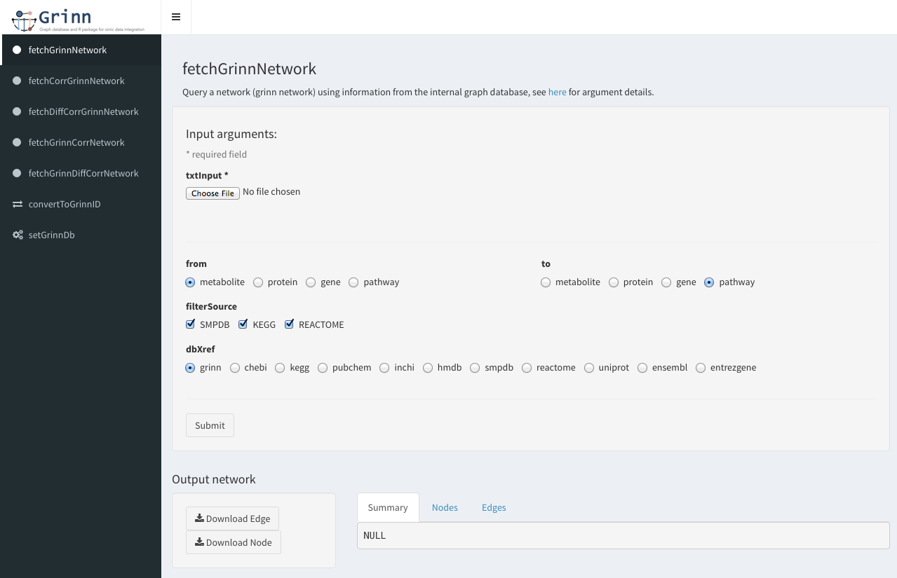

grinnShiny - start GUI
Description
star GUI as shiny app.
Usage
grinnShiny()
Value
shiny app
Examples
# Set Grinn database location to local server
grinnShiny()
GUI

Go to HOME | Documentation | fetchGrinnNetwork | fetchCorrGrinnNetwork | fetchDiffCorrGrinnNetwork | fetchModuGrinnNetwork | fetchGrinnCorrNetwork | input formats